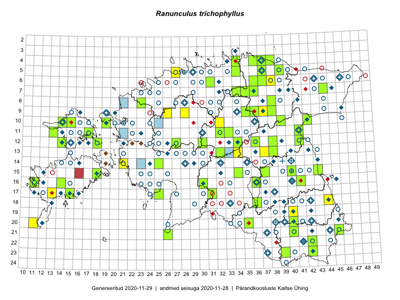

Ranunculus trichophyllus
Uuendatud: 2016-12-01
Kaardile koondatud taksonid: Ranunculus trichophyllus Chaix

Kaart põhineb 16 kirjel.
Viited andmebaasikirjetele
- Malle Leht: 2015-05-16: : ala
- Katrit Karus, Tõnu Feldmann: 2015-08-03: 13-34: ala
- Katrit Karus, Tõnu Feldmann: 2015-08-07: 07-36: ala
- Eeva-Maria Jeletsky, Tarmo Niitla: 2015-06-17: 11-17: ala
- Maria Abakumova, Helle Mäemets: 2015-07-30: 15-34: ala
- Ülle Jõgar, Illi Tarmu, Kai Rünk: 2015-07-03: 13-38: ala
- Kadi Palmik, Helle Mäemets: 2015-07-24: 15-40: ala
- Helle Mäemets, Mare Leis: 2015-06-24: 18-36: ala
- Ülle Jõgar, Illi Tarmu, Kai Rünk: 2015-07-23: 13-38: GPS punkt
- Oliver Parrest, Mari Reitalu: 2015-05-26: 20-11: GPS punkt
- Helle Mäemets, Mare Leis, Jaak-Albert Metsoja: 2015-07-06: 15-37: GPS punkt
- Helle Mäemets, Mare Leis, Jaak-Albert Metsoja: 2015-07-05: 16-36: GPS punkt
- Thea Kull, Oliver Parrest: 2016-07-06: 09-26: ala
- Mari Reitalu, Oliver Parrest: 2016-07-04: 14-21: ala
- Mari Reitalu, Triin Reitalu: 2016-07-11: 09-37: ala
- Rein Kalamees, Liina Oja: 2016-07-06: 09-28: ala